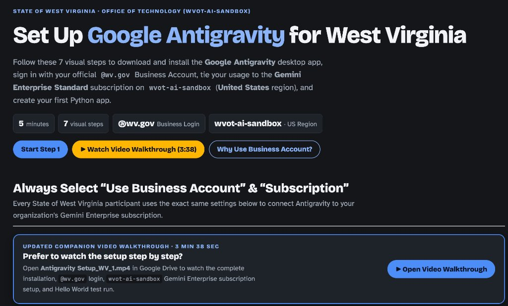
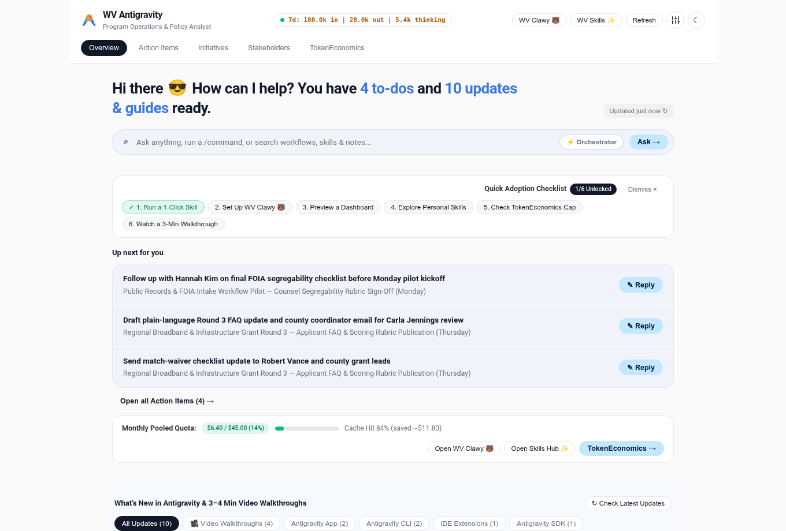

Google Antigravity Plugin Suite — Complete Tour
Practical tour of where to click across WV Antigravity Overview, WV Clawy 🐻, Action Items, Dedicated WV Skills Hub (with Personal Skills), TokenEconomics, and WV Preview.

Zero-footprint suite built for strict state laptop standards — featuring 3 streamlined sidebar panels (WV My Hub, WV Skills with inline 🐻 Ask Clawy, and WV Preview), built-in Customizations → Google Workspace connectors, and 36 ready-to-run skills (zero local MCP subprocesses & zero /tmp writes).
Download Google Antigravity Desktop and sign in with your official organizational Business Account (@wv.gov).
@wv.gov)

agy plugin install https://github.com/peterfishergcp/gps-ai-hub/tree/main/projects/wv-antigravity-suite
Use WV My Hub (Overview, Action Items & TokenEconomics), WV Skills (36 skills + inline 🐻 Ask Clawy), and WV Preview — and enable Google Docs, Sheets, Slides, Drive, Calendar & Gmail under Customizations → Marketplace → Google Workspace.


Three clean sidebar panels — Antigravity Rainbow A (WV My Hub), Sparkles (WV Skills with inline 🐻 Ask Clawy), and Magnifying Glass (WV Preview with newest-first sorting, search, Save HTML & Print/PDF) — storing 100% of state inside ~/.gemini/config/.
Five simple 2.5–3 minute how-to walkthroughs showing where to click across your WV Antigravity Overview, 60-second setup & Turbo Mode, WV Skills & Visual Previews, Orchestrator + TokenEconomics, and WV Clawy 🐻.
Practical tour of where to click across WV Antigravity Overview, WV Clawy 🐻, Action Items, Dedicated WV Skills Hub (with Personal Skills), TokenEconomics, and WV Preview.
Step-by-step WV guide to pasting the wv-antigravity-suite command, using ⚡ Turbo during setup vs. 🔒 Default daily, and linking @wv.gov GE search.
How to run 36 ready-made skills in WV Skills (with inline Ask Clawy 🐻), create your own Personal Skills (+ New Skill), and customize interactive Dashboards & 16:9 Slide Decks in WV Preview.
How to click ⚡ Orchestrator on multi-step tasks, prep big meetings in 60s with /swarm-prep, and track your monthly plan in TokenEconomics.
How to open WV Clawy 🐻, see which parallel chats Need You, click ↗ Pop Out for side-by-side split view, connect Kore Gemini Live voice, and track Goals.

Search across 7 zero-footprint plugins (6 active + opt-in automations) — including dedicated WV State Skills (WV FOIA § 29B-1-4, WV Purchasing § 5A-3), Orchestrator & Token Telemetry, Personal Memory & 4-Agent Swarm, and 7 Government Services skills — plus built-in Customizations → Google Workspace connectors.